プレスキットPress kit
報道・紹介でのご利用向けの素材と製品情報です。このページの画像・動画は、JockeyBoxの紹介のためにご自由にお使いください。
Assets and facts for press and creators. Feel free to use the images and video on this page to cover JockeyBox.
製品情報Fact sheet
| タイトルTitle | JockeyBox - 競馬ジョッキーキャリアゲームJockeyBox: Horse Racing Career |
|---|---|
| ジャンルGenre | 3D競馬ジョッキーゲーム3D horse racing / jockey career |
| 対応機種Platforms | iPhone・iPad（iOS 18以降）、Appleシリコン搭載のMaciPhone and iPad (iOS 18 or later), Mac with Apple silicon |
| 配信予定日Release | 2026年11月7日（土）※App Storeの審査の状況により変わる場合がありますNovember 7, 2026 (subject to App Store review) |
| 価格Price | 980円（税込・発売記念価格）¥980 launch price |
| App内課金In-app purchases | あり（見た目のアイテム・牧場の拡張）。ゲーム内のポイントは販売していません。Cosmetic items and farm expansions. In-game points are not sold. |
| 言語Languages | 日本語・英語（ゲーム内で切り替え）Japanese and English, switchable in-game |
| ベータテストBeta | TestFlightで参加者を募集中Open on TestFlight |
| 開発・運営Developer | BOX合同会社（神奈川県横浜市）BOX LLC (Yokohama, Japan) |
| お問い合わせContact | BOX合同会社 JockeyBox 担当：小川 info@ipsbox.com 電話 050-3749-0811BOX LLC, JockeyBox press contact: Ogawa / info@ipsbox.com / +81-50-3749-0811 |
紹介About
新人騎手からトップジョッキーを目指す、3Dの競馬ジョッキーゲームです。調教師や馬主から騎乗の依頼を受けてレースに出て、注文に応えながら、お手馬で重賞を狙います。競馬場は国内15（中央9・地方6）と海外10。中央にはオリジナルのG1が24レースあります。騎手・調教師・馬主は700人以上、競走馬は7,500頭以上が登場します。オンライン対戦はベータ版でも遊べます。
A 3D horse racing game where you ride from rookie jockey to champion. You make the calls in the race yourself — push, hold back, go for the whip. Take riding offers, ride to the connections' orders, and win big races on your regular rides. 25 racecourses: 15 in Japan (9 on the main national circuit and 6 regional tracks that race at night) and 10 overseas, with 24 original G1 races on the national circuit. More than 700 jockeys, trainers and owners, and more than 7,500 racehorses. Online races are already playable in the beta.
紹介動画Trailer
1920×1080・約37秒・音あり 1920×1080, about 37 seconds, with sound
キービジュアル・アイコンKey visual and icon

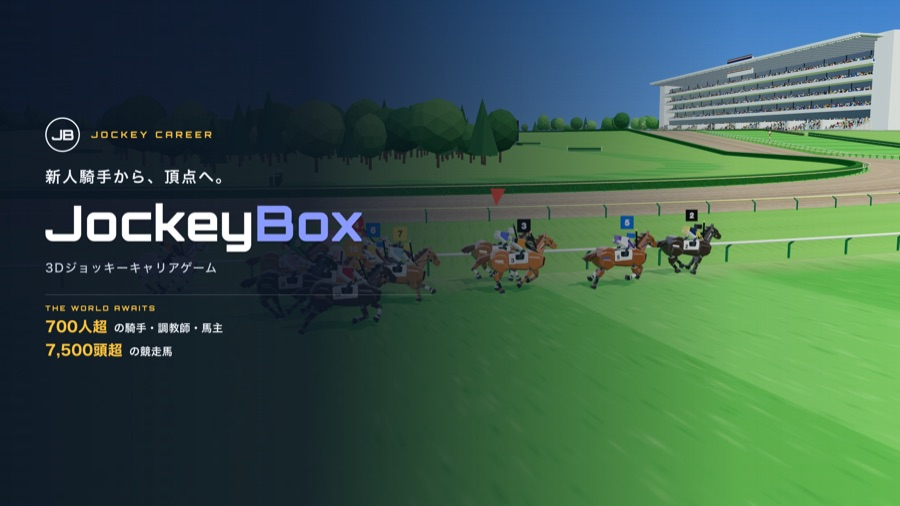

スクリーンショット（iPhone）Screenshots (iPhone, 2868×1320)

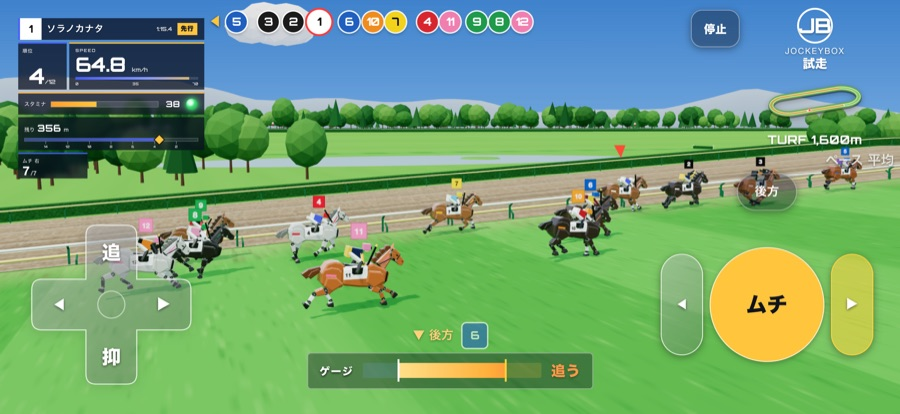

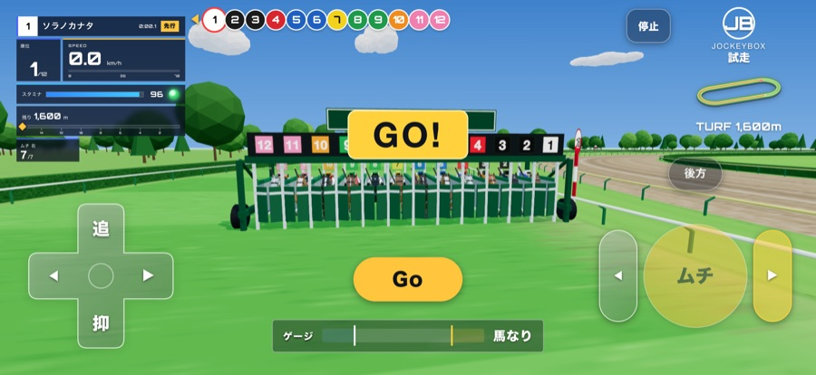

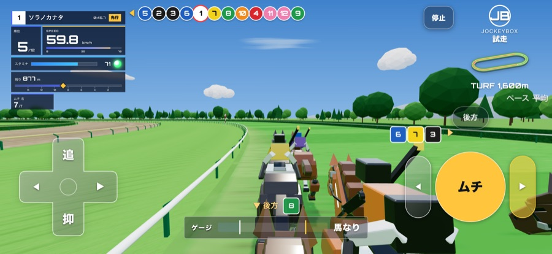

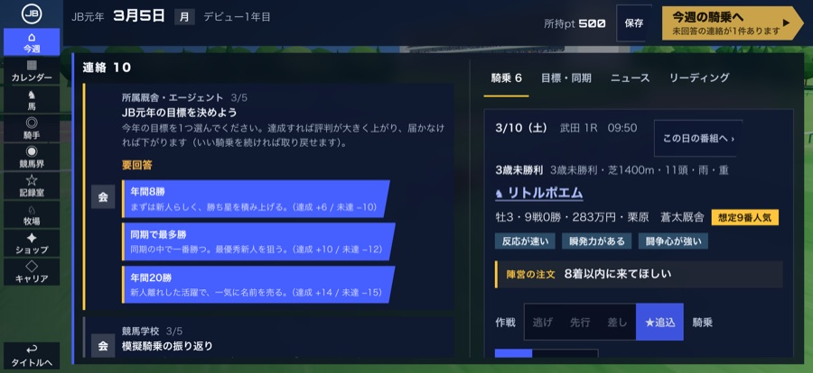

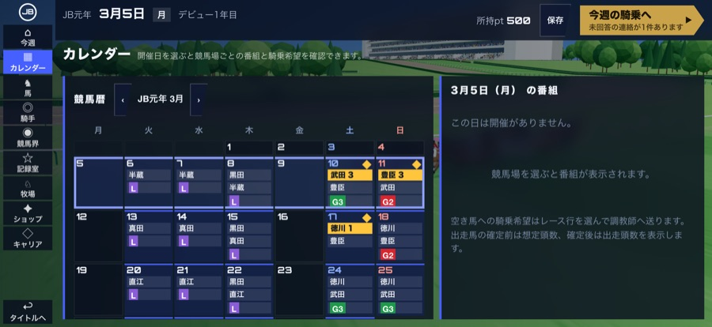

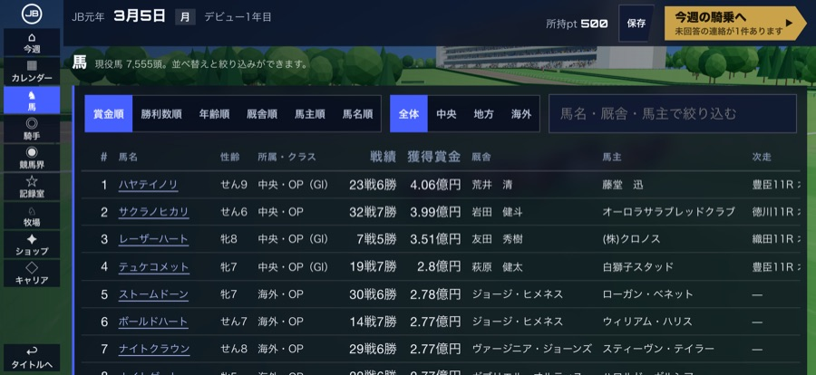

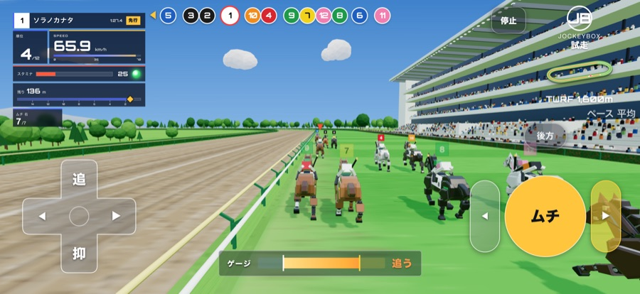

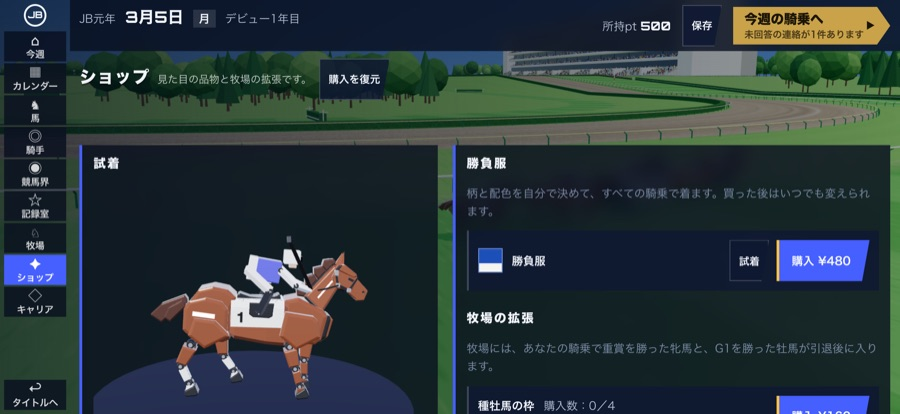
スクリーンショット（iPad）Screenshots (iPad, 2752×2064)

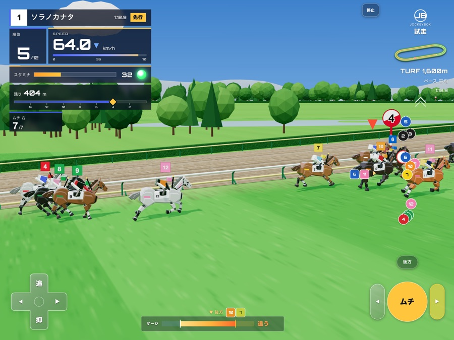

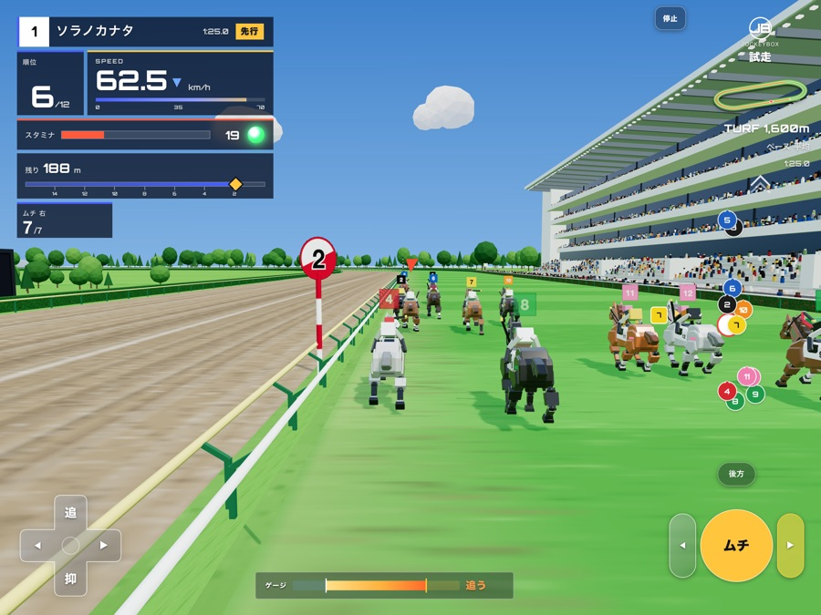

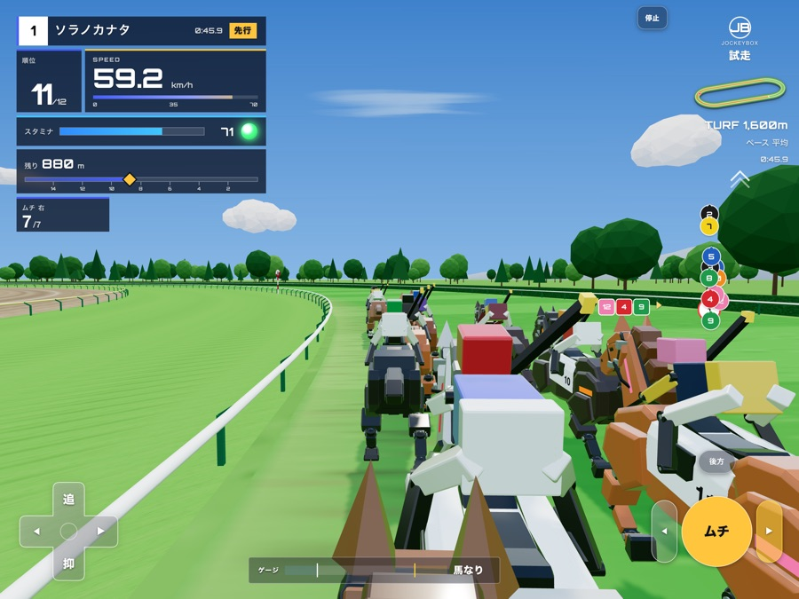

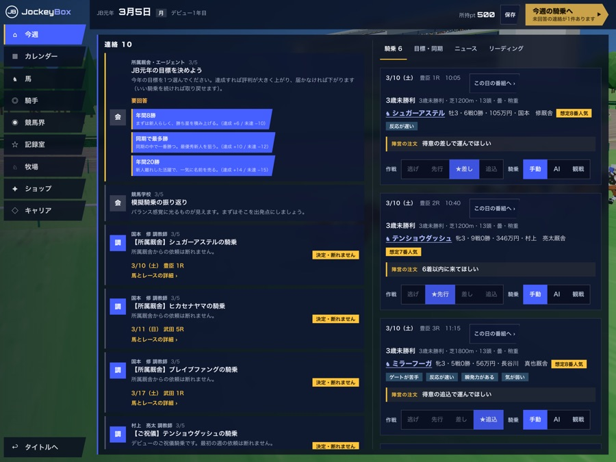

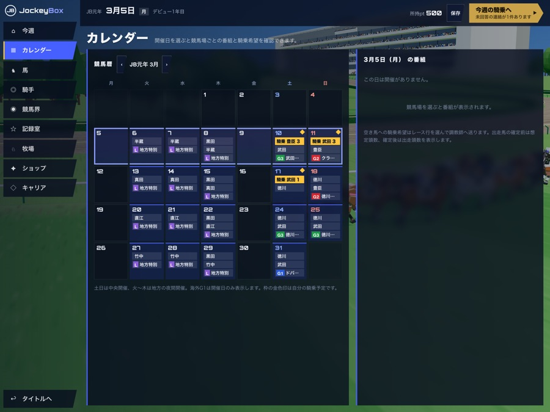

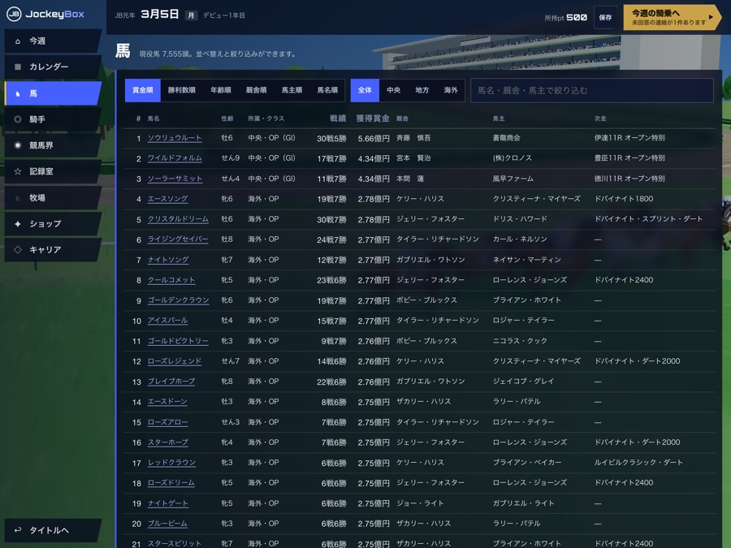

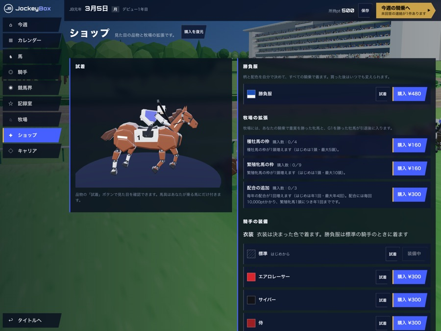
画面は開発中のものです。レース名・競馬場名・人名・馬名はすべてゲーム内オリジナルです。Screens are from a pre-release build. Race, track, person and horse names are all original to the game.